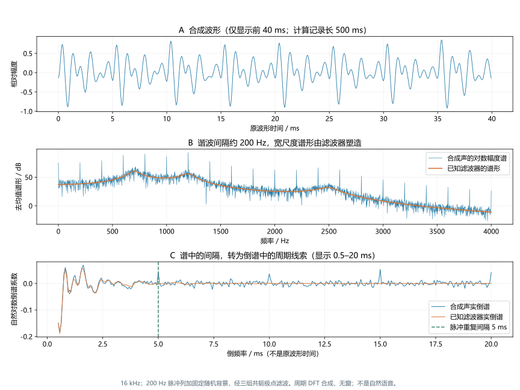
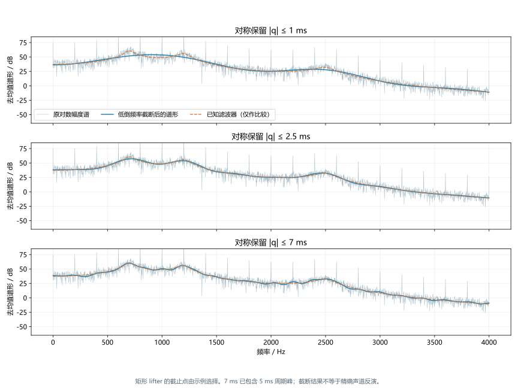
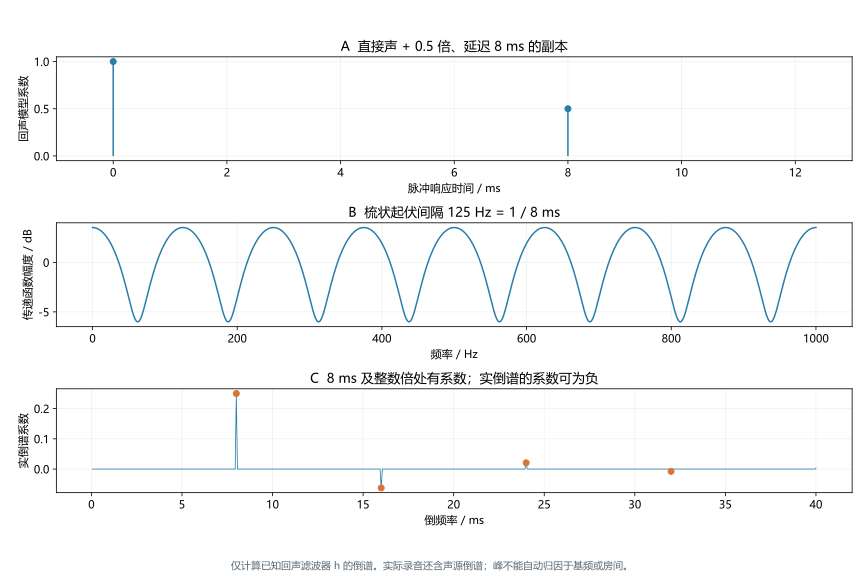
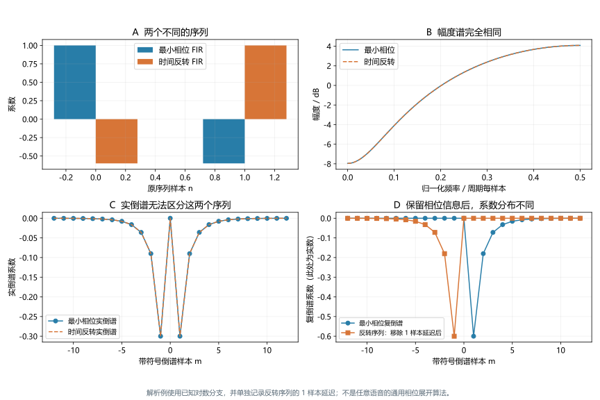

倒谱
深度词条 · 本地预览 · 2026-10-10 · Draft，尚未完成专业审阅
倒谱（cepstrum）是一类先对声音的频谱取对数，再进行傅里叶或相关变换的信号表征。它把“频谱怎样随频率起伏”转换为另一组坐标中的系数，因此适合观察谐波间隔、回声产生的梳状起伏，以及较平缓的谱形。名称 cepstrum 是 spectrum 的字母重排；其坐标 quefrency 也由 frequency 重排而来，中文通常称为倒频率。1
理解倒谱时，应先分清三件事：输入的是幅度谱、功率谱还是含相位的复频谱；中间是否取对数、平方或压缩频带；输出坐标是线性频率倒谱的倒频率，还是特征变换后的系数编号。倒谱不是把普通频谱直接逆变换回原波形；取对数这一步改变了问题。不同定义下的纵轴数值也不能直接混用。235
1. 为什么还需要一种表征
从谐波谱中看出两个尺度
一段近似稳定的浊音通常同时包含两种谱结构：相邻谐波之间的细密间隔，以及由发声系统塑造的较宽尺度起伏。前者与脉冲重复率有关；后者可体现声道共振和声源谱倾斜。直接看谱，两者叠在一起；倒谱则尝试按“谱形变化得快还是慢”重新表达这些信息。7
这种解释与频谱和功率谱密度衔接：普通频谱横轴标出某个分量位于多少 Hz；倒谱横轴帮助描述谱起伏的间隔对应多长的周期。例如，200 Hz 间隔对应 5 ms，而不是把 200 Hz 那一条谱线移动到某个新位置。倒谱使用整个对数谱的变化模式，不能通过逐点对横轴取倒数得到。

表征、检测与分离是不同目标
用倒谱寻找周期峰，是检测任务；保留一部分倒谱来估计平滑谱形，是表征或估计任务；把声源、声道或回声成分分开并重构，则需要更多模型和可逆性条件。一个看得见的周期峰，只说明某种谱结构具有相应周期线索，不自动证明已经正确分离了两个物理成分。经典倒谱工作从回声与基频检测发展到同态反卷积，正涉及这些目标的区分。1
2. 实倒谱、复倒谱与功率倒谱
本词条采用的离散约定
对采样率为 的实序列 ，取 点 DFT，正变换不缩放，逆变换带 。若各频率点均非零，实倒谱定义为：26
是与幅度谱同单位的固定正参考值，用于使对数的自变量无量纲。改变固定参考值，只改变零倒频率系数 ；本文教学代码用相对数值单位。实输入的幅度谱为偶对称，因此实倒谱在理论上为实数并满足循环偶对称。有限精度计算可能有很小的虚部误差。
若直接计算 ，得到的是原序列；若计算 ，得到的是实倒谱。后者已经舍弃频谱相位，不能保留原波形的全部信息。对数既压缩数值范围，也使相乘的谱幅度变为相加；“压缩”不是唯一目的。
实际信号可能有零谱点，程序常用 避免负无穷。谱底 及其参考方式属于算法定义，必须报告。加入谱底后，一些理想恒等式只近似成立；不能一面截断极小谱值，一面宣称所有理论关系仍严格不变。
三种名称不能互换
| 名称 | 主要运算 | 相位与数值解释 |
|---|---|---|
| 实倒谱 | 舍弃相位；系数可正可负 | |
| 复倒谱 | ，使用相容的对数分支和相位处理 | 保留相位相关信息；实信号的结果也可能是实数 |
| 功率倒谱 | 常见形式为 | 非负；还涉及变换与平方的具体标度 |
历史文献和软件的命名不完全一致。Praat 的 PowerCepstrum 转换明确包含“对平方模取自然对数、逆变换、再平方”。在相同参考值和 DFT 标度、没有谱底的约定下，，于是上述功率倒谱为 。这不是把功率谱本身直接逆变换，也不意味着任意程序的输出都可按这个比例换算。5
如果只对功率谱取对数后逆变换、未做最后平方，所得序列可以有负值，属于另一种输出约定。将这些不同结果都简称“倒谱”时，图注至少应给出运算式。功率倒谱中的“功率”也不能直接解释为瓦特或 Pa²/Hz。
3. 倒频率轴怎样阅读
秒数描述谱结构，不是原声音发生的时刻
对上述线性频率 DFT，倒谱样本间距为：
若谱中规则起伏的频率间隔约为 ，相应倒频率线索通常位于 。200 Hz 谐波间隔对应 5 ms；8 ms 延迟副本造成约 125 Hz 的梳状谱间隔。这两个例子具有相似的数学周期关系，却有不同的物理来源。
倒频率写成 ms，不表示某段声音在录音开始后第几毫秒出现。短时倒谱图中可以同时出现“分析帧时间”与“倒频率”：前者描述声音随时间的演变，后者描述某一帧的谱结构。将倒频率轴当成录音时间轴，会把结构与事件混淆。
周期数组、带符号坐标与零填充
有限 DFT 的倒谱是 点周期数组。靠近数组末尾的样本可按负倒频率解释，例如 对应带符号样本 。把数组居中显示后，横轴常呈现正负两侧；负倒频率是数学表征的一部分，不代表声波先于原因发生。36
保持采样率不变，把同一段记录补零并增加 ，会减小频谱网格间距 ，改变倒谱周期长度 ；倒频率样本间距仍是 。补零不增加原记录中的声学信息，也不能代替更长的有效观察窗。倒谱峰的可信度还取决于窗内是否含足够周期、谱泄漏、噪声以及信号是否近似稳定，不能由绘图网格的密度决定。
4. 同态分析：何时卷积变成相加
源—滤波器模型的关键关系
在一致的变换与边界条件下，若 ，则 。以统一相对单位写自然对数、暂不加入谱底，有：
这就是同态分析的核心：输入中以卷积结合的成分，经过“变换—对数—逆变换”成为可相加的倒谱成分。语音中可近似把周期激励、声门脉冲形状和声道响应作为不同的卷积因素；某些因素的倒谱较集中在低倒频率，另一些包含较高倒频率的周期峰。7
等式本身不保证成分能够分开。分离还要求不同成分在选用的倒谱区域内有足够区分度，并需要说明边界条件。有限序列的线性卷积应有相应补零；直接用同长度 DFT 相乘，对应循环卷积。图 1 使用明确的周期 DFT 模型，源倒谱与滤波器倒谱相加的最大数值误差小于 ，仅验证该合成模型中的恒等式。
模型成立也不等于短时语音中严格成立
取一段声音并乘以窗函数，是时域乘法；它通常不能随意移到源—滤波器卷积内部。经典同态语音分析对窗与系统响应的相对尺度作了近似假设。自然语音中的共振、激励和发声方式还可能随帧内时间变化，因此短时源—滤波器解释有适用范围。7
此外，两个说话人相加为 ，并不满足 。多说话人混合不能因“取了倒谱”就直接按两组倒谱相加处理。加性噪声也会破坏单纯的卷积关系；声源有相关性时，还需考虑复谱之间的相位干涉。
固定增益具有更简单的性质：若所有谱点同时乘以正数 ，且未发生裁剪或相对谱底变化，实倒谱只在 增加 。因此非零倒频率系数对这种整体缩放不敏感，但对均衡器、噪声、非线性压缩以及分析设置变化仍可能敏感。这种性质不等于特征已免疫所有录音设备差异。
5. Lifter 与谱包络估计
在倒频率上保留一部分系数
Lifter 是 filter 的字母重排，通常指对倒谱施加一个选择或加权函数。低倒频率 lifter 保留靠近零点的系数，再变换回去，可以得到较平滑的对数谱；其对应的幅度谱估计为：9
对实倒谱，权重通常要保持循环偶对称，不能只保留数组开头而忽略对应的末尾负倒频率部分。这里得到的“包络”沿频率轴描述谱形，称为谱包络；它不同于沿原时间轴描述幅度变化的时域包络。
截止点为何没有普适答案
若滤波器的倒谱主要位于低倒频率，而声源的显著周期峰位于更高倒频率，低倒频率截断可以压低谐波起伏，突出较宽的共振结构。但声源谱倾斜也可能进入低倒频率，共振响应也可能有较长的倒谱尾部。因此保留下来的曲线通常是“平滑谱形估计”，不能自动标成纯声道传递函数。

截止点太短，可能抹平共振峰的细节；太长，可能保留源的周期结构。矩形截断还可能产生谱形振铃，平滑加权可改变这一权衡。高基频意味着周期更短，可分离的倒频率区间可能变小；“把截止点设在周期之前”只是模型启发，不保证在所有语音上都能恢复共振峰。具体目标是展示总体谱形、估计共振频率还是做反卷积，会影响参数选择。
6. 基频与回声：相似的峰，不同的原因
基频估计利用的是谐波间隔
对近似周期浊音，谐波间隔与基频有关，倒谱可在基频周期 附近形成峰。Noll 的早期工作记录了将倒谱周期峰用于语音基频检测的方法；本词条只据核实的原始摘要讨论其历史用途，不转述全文算法或识别性能。8
一个基本估计流程是在合理范围内搜索周期峰：
该流程还需判断是否有周期结构、如何处理多个峰，以及怎样使跨帧轨迹连续。不能在包括零倒频率的整个数组中直接寻找最大值；低倒频率的谱形系数可能比周期峰大得多。峰也可能出现在周期的整数倍处，引起倍频或半频错误。错误的搜索范围、强噪声或混合声源都会造成错误归因。
这与谐波性及纯音与复合音相关：多条规则谐波提供了可观察的谱间隔，即使基频分量缺失，仍可能存在相应的周期结构。孤立纯音不具有同样的多谐波间隔；有限窗和谱底可能生成某些倒谱图案，不能把这些图案直接等同于浊音的周期峰。倒谱检测出的声学周期也不能直接代表听神经的同步反应或听者的音高判断。
回声也能产生倒谱周期线索
设录音为原声 加一个延迟副本，。这可以写成 ，其中：
当 ，该回声滤波器的对数幅度包含以延迟为尺度的周期起伏。在无限序列的解析展开中，其实倒谱满足：
图 3 取 kHz、、，延迟为 8 ms；前四个正倒频率位置的系数为 。有限 DFT 还包含周期混叠，本例足够长，解析值与数值结果的误差小于 。这些正负系数描述对数谱结构，负值不表示负的声能。

真实房间声学中的多路径通常比单回声复杂，而且声源周期、反射延迟和噪声可能同时影响倒谱。区分它们应结合原始波形、谱形、跨帧变化或独立的系统测量。倒谱可以提示候选结构，但不会为每个峰自动给出物理标签。
7. 相位、复倒谱与最小相位重构
复倒谱的“复”指什么
复倒谱使用含相位的复对数：
需要与所选对数分支、相位展开和延迟处理一致。直接对每个频率点取主值复对数，会遇到相位跳变；普通相位展开也未必解决线性相位与整体延迟的记录问题。MathWorks 的 cceps 使用特定处理并返回延迟参数 nd，逆变换要使用相容的延迟信息。34
复倒谱不意味着输出一定有非零虚部。对实输入，在适当的共轭对称和相位约定下，它也可为实数。“复”强调变换保留了复频谱中的相位信息。对于符合条件的最小相位序列，复倒谱主要位于非负样本；最大相位因素可对应负样本，整体延迟应单独处理。因果性本身并不能代替最小相位条件。7
实倒谱相同，原信号可以不同
图 4 使用 和时间反转序列 。两者幅度谱相同，实倒谱也相同，但原序列显然不同。对 单独移除一采样点延迟后，已知解析分支下的复倒谱系数主要分布在负样本侧； 则主要位于正样本侧。

保留实倒谱可以重建对应的幅度谱；加入最小相位假设，还可以构造具有该幅度谱的最小相位信号。构造结果不一定是原始信号：原信号可能含不同的延迟或全通相位因素。rceps 文档提供的最小相位重构，应按这个意义理解，不能写成“实倒谱可无损还原任意声音”。2
复倒谱还可用于声门源估计，但需要语音生成模型、混合相位特性和窗定位等条件。Drugman、Bozkurt 与 Dutoit 的研究具体考察了窗位置、窗形和窗长的影响，并在其方法中以声门闭合时刻为对齐依据。这说明分解质量依赖分析设计，不能仅把负倒频率系数都命名为某个生理成分。10
8. MFCC 与普通倒谱怎样联系
改变了频率尺度，也改变了坐标含义
Mel 频率倒谱系数（MFCC）是常用的语音特征。Davis 与 Mermelstein 的 1980 年论文是这一类参数表示比较的经典书目；这里仅核对其出版信息，不据未读取的全文转述识别率。具体的现代实现流程可参照版本化软件文档。1112
常见 MFCC 流程为：短时功率谱进入 Mel 滤波器组，汇聚为各频带的能量，再取对数并作离散余弦变换。忽略参考值和谱底，写成：
为滤波器组频带编号， 为输出阶数， 取决于 DCT 归一化。这个变换处理的是 Mel 频带上的对数能量，不能把第 个 MFCC 直接换算成 秒。普通倒谱中的“5 ms 周期峰”不能照搬为 MFCC 某一阶的含义。
低阶 MFCC 往往描述跨频带的较宽尺度谱形变化，高阶可包含更细的变化；保留多少阶是特征设计的选择，并不意味着已经获得全部基频或声道信息。Mel 尺度体现一种感知相关的频率加权思路，不代表 MFCC 就是耳蜗或听神经实际输出。
实现细节会改变特征
Mel 频带数量、频率上下限、三角滤波器归一化、功率指数、对数底、DCT 类型和是否保留零阶，都可能改变数值。零阶系数与对数频带能量的总体水平有关，但并不必然等于原波形的总能量；有的实现还用独立帧能量替换它。比较系统时应说明使用哪种约定。12
例如 librosa 的 power_to_db 使用 ，并可设置最低值和 top_db 动态范围裁剪。对数底改变通常产生比例变化；非线性裁剪则可能改变谱形及后续多阶系数，不能只做一个整体比例换算。13
MFCC 软件中的 lifter 常指对各阶系数施加正弦权重，与图 2 中按秒数选择低倒频率区间的操作并不相同。倒谱均值归一化可减弱某些近似稳定通道的影响，但 Mel 频带积分与取对数的顺序，使其不能直接套用逐频点对数谱的严格卷积相加式。时间差分特征则描述系数随分析帧的变化，应同时报告差分窗和边界处理。
9. 短时倒谱图与倒谱峰突出度
两种时间坐标并存
将声音逐帧分析，可形成倒谱图或功率倒谱图：一条轴是分析帧时间，一条轴是倒频率，颜色表示系数或其派生量。它与声谱图不同，后者通常显示“分析帧时间 × 频率”。读图前应核对颜色表示实倒谱、平方值还是经过平滑和 dB 转换的数值。
帧长控制每次纳入多少原声音，步长控制多频繁地更新一次结果，两者不能混用。Praat 的 PowerCepstrogram 工具将窗长与 pitch floor 联系起来，窗长采用 的约定，同时另设时间步长，还包含重采样和预加重处理。这是具体工具的定义，并非所有倒谱分析都应固定使用同一窗长。14
CPP 衡量峰相对背景的突出程度
倒谱峰突出度（cepstral peak prominence，CPP）在指定倒频率范围内寻找峰，并将其与该处拟合的背景趋势比较。Praat 的定义涉及功率倒谱的 dB 表示、峰搜索、插值和趋势拟合。改变峰搜索范围、拟合区间、拟合形式或平滑步骤，都可能改变结果。15
CPP 不等于最大实倒谱系数，不等于基频，也不能不经方法说明就与谐噪比 HNR 互换。峰的位置可以提供周期信息，而峰相对背景的高度描述另一种性质。经平滑计算的 CPPS 还应报告平滑参数和具体程序；两个都以 dB 输出的指标，也可能具有不同的算法定义。
近期证据强调任务与方法依赖
Murton 等 2023 年研究提出借助 voice activity detection 计算 voice-only CPP。在其数据中，含连续言语或合并不同任务的部分比较显示这种处理的益处；持续元音并未呈现普遍改善。不同分类目标下的结果也不完全相同。因此不能因为标题使用“Task-Independent”，就写成方法已经消除了所有任务差异。16
Yanushevskaya 等对 100 名 18–55 岁健康成人的研究进一步指出，任务中的清辅音组成、录音条件和是否使用 VAD 会影响 CPP。该论文在线发表于 2024 年，期刊卷期为 2025 年，不能算作两项独立研究。其结果提醒读者：跨语言、跨材料或跨软件比较时，应先核对分析条件；不能从一组 CPP 数值单独判定发声机制或建立普适正常界值。17
10. 怎样设计可复核的倒谱分析
先记录目标，再记录参数
一次可复核的分析至少应交代输入采样率与通道、有效记录长度、去均值或预加重处理、窗函数、帧长与步长、DFT 长度、谱类型、对数参考值及谱底。若涉及周期检测，再说明搜索范围和峰选择规则；若涉及谱形估计，说明 lifter 权重；若涉及重构，说明相位分支和延迟；若涉及 CPP，说明平滑与趋势拟合。
原始声压校准、整体电平与倒谱定义属于不同层面。即便非零倒谱系数对理想整体增益不敏感，也应保留录音条件，特别是有自动增益、压缩、降噪或不同背景声时。分析中丢弃了哪些信息，要与最后提出的结论相匹配。
实信号可使用半谱实现，但不要先折叠加倍
以下为单帧实倒谱的简化实现，仅演示约定；不是完整的基频检测、CPP 或复倒谱算法：26
import numpy as np
# frame 已完成需要的加窗处理；nfft 不小于实际帧样本数。
# 所有数值采用约定的相对单位，eps 和 reference 应随结果记录。
X = np.fft.rfft(frame, n=nfft)
L = np.log(np.maximum(np.abs(X), eps) / reference)
c = np.fft.irfft(L, n=nfft)
q = np.arange(nfft) / fs # 循环数组坐标；末尾可按负倒频率解释rfft 保存实信号非冗余的一半复频谱，irfft 按对称性恢复完整变换。这里不能先采用单边 PSD 绘图规则，把正频率功率加倍，再对该结果取对数并当作双边对数幅度谱。折叠规则和谱类型的混用，可能改变多个倒谱系数。对奇数或偶数长度，都应显式传入正确的 nfft。
用已知例子检查算法含义
可先用已知的脉冲重复间隔检查倒频率轴，用单回声模型检查峰位置和正负系数，再用幅度谱相同而相位不同的序列检查重构声明。这样的验证帮助发现单位、标度或分支错误；合成例通过后，仍需要真实数据中的稳定性和外部验证，才能评价特定任务的性能。
本词条四幅图均由公开参数的教学脚本生成，未测量听者、临床对象或真实房间，也未运行 MATLAB、librosa 或 Praat 以复现论文。数值验证包括卷积模型的倒谱相加、整体增益对零阶的影响、回声展开系数，以及已知复对数分支的逆变换；这些检查的范围是数学和实现一致性。
11. 与其他声学和听觉词条的关联
倒谱提供的是对谱结构的重新表征。基频和谐波性解释周期线索的来源；共振峰解释谱包络中的共振结构；频谱与功率谱密度帮助核对输入标度；声谱图则提供另一种时间—频率观察方式。
它与时域包络和时域精细结构也应相互关联，但三者的分解对象不同。ENV／TFS 讨论原声音或分析通道中的幅度与相位时间轨迹；实倒谱处理对数幅度谱并舍弃相位，复倒谱则通过特定分支保留相位相关信息。谱包络、时域包络和感知上的音色，不能仅因都包含“形状”就视为同一个量。幅度调制与频率调制中的边带也会影响谱结构，解释倒谱峰时仍需知道信号如何生成。
倒谱家族还在发展。Lambropoulos 等 2024 年使用子带倒谱考察日语多说话人元音的局部语音敏感频段；这项具体研究说明倒谱系数可按任务设计新的局部表征，并不证明所有语音信息都应由传统低阶 MFCC 表达，也不意味着其结论已推广到所有语言和声音。18
使用倒谱提出结论时，最关键的是让“采用的变换—保留的信息—分析的任务”彼此对应：检测周期要验证周期，估计谱形要检查平滑误差，重构信号要处理相位，评价语音质量要核对任务和提取方法。倒谱的价值在于让这些结构更便于分析，而结论的可信度仍取决于模型、参数与证据。
参考文献与证据范围
[1] Alan V. Oppenheim; Ronald W. Schafer (2004). Dsp history — From frequency to quefrency: a history of the cepstrum. IEEE Signal Processing Magazine, 21(5), 95–106。访问范围：fulltext。阅读作者托管 PDF 的历史回顾、同态变换与相位讨论，主要为 PDF 页 1–4；不是直接读取 Bogert 等 1963 年原章。
[2] MathWorks (官方文档（2026-10-10 核验）). rceps — Real cepstrum and minimum phase reconstruction. Signal Processing Toolbox 官方文档。访问范围：documentation。阅读定义、算法、最小相位重构与回声示例；实倒谱使用 IFFT(log(abs(FFT)))。未运行 MATLAB，原创图另用 Python 计算。
[3] MathWorks (官方文档（2026-10-10 核验）). cceps — Complex cepstrum. Signal Processing Toolbox 官方文档。访问范围：documentation。阅读复对数、相位展开、rcunwrap、nd 延迟及 FFT 方法限制；复倒谱不能用主值复对数替代，有限 DFT 结果具有周期混叠。
[4] MathWorks (官方文档（2026-10-10 核验）). icceps — Inverse complex cepstrum. Signal Processing Toolbox 官方文档。访问范围：documentation。阅读逆变换与 nd 的延迟恢复说明；只在对数分支及延迟记录相容时讨论重构，未测试第三方工具箱。
[5] Paul Boersma; David Weenink / Praat (官方手册（2026-10-10 核验）). Spectrum: To PowerCepstrum. Praat 官方手册。访问范围：documentation。阅读全部转换说明：对平方模取自然对数、逆傅里叶变换后再平方。本文实倒谱与功率倒谱比例公式限定为相同标度且无谱底。
[6] NumPy Developers (官方文档（2026-10-10 核验）). NumPy Reference — Discrete Fourier Transform. NumPy 官方文档。访问范围：documentation。阅读 Implementation details、Normalization、Real and Hermitian transforms：默认正变换不缩放、逆变换缩放及实信号对称。本文另明确幅度与功率标度，不把 abs(FFT) 或 abs(FFT)^2 自动认定为校准谱。
[7] Alan V. Oppenheim; Ronald W. Schafer (1968). Homomorphic Analysis of Speech. IEEE Transactions on Audio and Electroacoustics, 16(2), 221–226。访问范围：fulltext。重点阅读 PDF 页 1–4：卷积模型、复倒谱、最小／最大相位性质及短时加窗近似条件。没有将模型条件解释为自然语音可无误分离。
[8] A. Michael Noll (1967). Cepstrum Pitch Determination. Journal of the Acoustical Society of America, 41(2), 293–309。访问范围：abstract。核对 Crossref 出版方原始摘要及 DOI 书目：倒谱周期峰及早期语音基频检测。未读取全文、算法阈值或听测数据，不转述其性能结论。
[9] Julius O. Smith III (在线作者教材（2026-10-10 核验）). Spectral Audio Signal Processing — Cepstral Windowing. 作者教材：DSPRelated 托管章节。访问范围：fulltext。阅读 Cepstral Windowing 与 Spectral Envelope by Cepstral Windowing 两节：低倒频率截断与对数谱平滑。图中 cutoff 及数值由本文选择，不是语音通用参数。
[10] Thomas Drugman; Baris Bozkurt; Thierry Dutoit (2009). Complex Cepstrum-based Decomposition of Speech for Glottal Source Estimation. Interspeech 2009, 116–119。访问范围：fulltext。阅读原始会议摘要及 PDF 页 1–3：混合相位分解、声门闭合时刻对齐、窗形和窗长敏感性。2019 年 arXiv 存档不作为新研究计数；未复现论文实验。
[11] S. B. Davis; Paul Mermelstein (1980). Comparison of parametric representations for monosyllabic word recognition in continuously spoken sentences. IEEE Transactions on Acoustics, Speech, and Signal Processing, 28(4), 357–366。访问范围：metadata。核对 Crossref 标题、作者、年份、页码与 DOI；IEEE 页面无法读取正文。OpenAlex 摘要仅用于筛选，正文只作为历史书目列举，不引用识别率或复现其系统。
[12] librosa contributors (0.11.0（2026-10-10 核验）). librosa.feature.mfcc. librosa 版本化官方文档。访问范围：documentation。阅读 log-power Mel 输入、DCT 类型、归一化、Mel 参数及 lifter 定义；MFCC 阶数不是线性频率倒谱的秒刻度，未运行 librosa。
[13] librosa contributors (0.11.0（2026-10-10 核验）). librosa.power_to_db. librosa 版本化官方文档。访问范围：documentation。阅读 10 log10(S/ref)、amin 与 top_db 裁剪定义；支持对数底、参考值及动态范围裁剪会影响后续特征的说明。
[14] Paul Boersma; David Weenink / Praat (官方手册（2026-10-10 核验）). Sound: To PowerCepstrogram…. Praat 官方手册。访问范围：documentation。阅读窗长、步长、pitch floor、重采样与预加重说明；窗长 3/pitch floor 是此工具的约定，不推广到所有倒谱软件。
[15] Paul Boersma; David Weenink / Praat (官方手册（2026-10-10 核验）). PowerCepstrum: Get peak prominence…. Praat 官方手册。访问范围：documentation。阅读搜索范围、峰值插值、背景趋势拟合及 CPP 定义；CPP 为峰相对趋势的突出度，不等于 F0、HNR 或未经校准的绝对峰高。
[16] Olivia M. Murton; Abigail E. Haenssler; Marc F. Maffei; Kathryn P. Connaghan; Jordan R. Green (2023). Validation of a Task-Independent Cepstral Peak Prominence Measure with Voice Activity Detection. Interspeech 2023, 4993–4997。访问范围：fulltext。阅读 PDF 页 1–4 的方法、结果表和讨论：voice-only CPP 在含连续言语或混合任务的数据中有条件获益，持续元音并非普遍改善；诊断分析样本 275，原始样本 295。未转述未验证的普适阈值。
[17] Irena Yanushevskaya; Niamh O’Donnell; Saoirse O’Regan (2025（2024-11-22 在线发表）). Cepstral Peak Prominence in normophonic Irish-English speaking adults: The effect of gender, age, speech task segmental composition, recording conditions and CPP extraction method. Clinical Linguistics & Phonetics, 39(4–5), 474–503。访问范围：abstract。阅读原始摘要并核对 PubMed 期卷页：100 名 18–55 岁健康成人，任务、录音条件及 VAD 方法影响 CPP；不据摘要制作正常参考区间或推广到其他语言、年龄和疾病。
[18] Michael Lambropoulos; Frantz Clermont; Shunichi Ishihara (2024). The sub-band cepstrum as a tool for locating local spectral regions of phonetic sensitivity: A first attempt with multi-speaker vowel data. Interspeech 2024, 1535–1539。访问范围：abstract。阅读原始会议摘要：子带线性倒谱与日语男性元音数据的局部语音敏感区分析；未读取全文统计表，不主张泛化性能或替代所有表征。